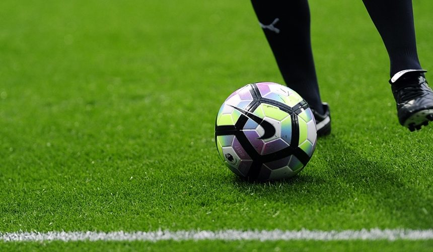

Podstawowe zasady gry
Czas gry
Standardowy mecz piłkarski trwa 90 minut i dzieli się na dwie połowy po 45 minut każda. Pomiędzy połowami jest 15-minutowa przerwa. Sędzia może doliczyć czas stracony na przerwy w grze (tzw. czas dodany). W przypadku rozstrzygnięcia meczu w systemie pucharowym, może być zarządzona dogrywka (2 × 15 minut) i rzuty karne.
Drużyna
Każda drużyna składa się z maksymalnie 11 zawodników (w tym bramkarza) i minimalnie 7 zawodników. W oficjalnych rozgrywkach można dokonać maksymalnie 5 zmian zawodników (w niektórych rozgrywkach 3). Bramkarz jest jedynym zawodnikiem, który może dotykać piłki rękami, ale tylko we własnym polu karnym.
Bramka
Bramka jest zdobyta, gdy piłka w całości przekroczy linię bramkową pomiędzy słupkami i pod poprzeczką. Decyzję o przyznaniu golu podejmuje sędzia, który może korzystać z technologii goal-line technology lub VAR (system wideo asystentów sędziów) w rozgrywkach, gdzie są one stosowane.
Spalony
Zawodnik jest na pozycji spalonej, jeśli w momencie podania znajduje się bliżej linii bramkowej przeciwnika niż piłka i przedostatni zawodnik drużyny przeciwnej (zwykle ostatni obrońca). Pozycja spalona nie jest karana, jeśli zawodnik znajduje się na własnej połowie lub otrzymuje piłkę bezpośrednio z rzutu od bramki, wrzutu lub rzutu rożnego.
Rzuty karne
Rzut karny jest przyznawany za przewinienie w polu karnym. Wykonywany jest z punktu karnego z odległości 11 metrów od bramki. Wszyscy zawodnicy oprócz bramkarza i wykonującego rzut muszą znajdować się poza polem karnym i co najmniej 9,15 m od piłki. Bramkarz może poruszać się po linii bramkowej, ale nie może wyjść przed linię przed kopnięciem piłki.
Faule i przewinienia
Sędzia może ukarać zawodnika żółtą kartką za poważne przewinienia lub niesportowe zachowanie, a czerwoną kartką za bardzo poważne przewinienia, agresję lub drugą żółtą kartkę w tym samym meczu. Kopnięcie, podcięcie, uderzenie, przytrzymanie przeciwnika lub dotknięcie piłki ręką (poza bramkarzem we własnym polu karnym) to typowe przewinienia.
Wrzut z autu
Gdy piłka opuści boisko przez linię boczną, przyznawany jest wrzut drużynie przeciwnej do tej, której zawodnik ostatnio dotknął piłki. Zawodnik wykonujący wrzut musi stać obiema nogami na ziemi, trzymać piłkę oburącz i wyrzucić ją zza głowy. Nie można zdobyć gola bezpośrednio z wrzutu.
Rzut rożny
Gdy piłka opuści boisko przez linię bramkową, ostatnio dotknięta przez zawodnika drużyny broniącej, przyznawany jest rzut rożny. Piłka ustawiana jest w łuku rożnym, a zawodnicy drużyny przeciwnej muszą stać w odległości co najmniej 9,15 m. Z rzutu rożnego można zdobyć bramkę bezpośrednio.
Znaczenie sygnałów sędziowskich
Gwizdek i gesty sędziego
Sędzia używa gwizdka do sygnalizowania przerwania gry, wznowienia gry lub decyzji o przewinieniu. Typowe gesty to:
- Wskazanie kierunku - wskazuje miejsce przewinienia i drużynę, która ma wznowić grę
- Podniesienie ręki - sygnalizuje spalonego
- Żółta i czerwona kartka - kary dyscyplinarne
- Wskazanie na punkt karny - przyznanie rzutu karnego
Wymiary boiska i sprzęt
Standardowe wymiary
Boisko do piłki nożnej powinno być prostokątem o długości 90-120 m i szerokości 45-90 m (dla meczów międzynarodowych 100-110 m × 64-75 m). Bramki mają szerokość 7,32 m i wysokość 2,44 m. Piłka powinna mieć obwód 68-70 cm i ważyć 410-450 g na początku meczu.
Odwiedzin: 0
Czas spędzony na stronie: 0 sekund